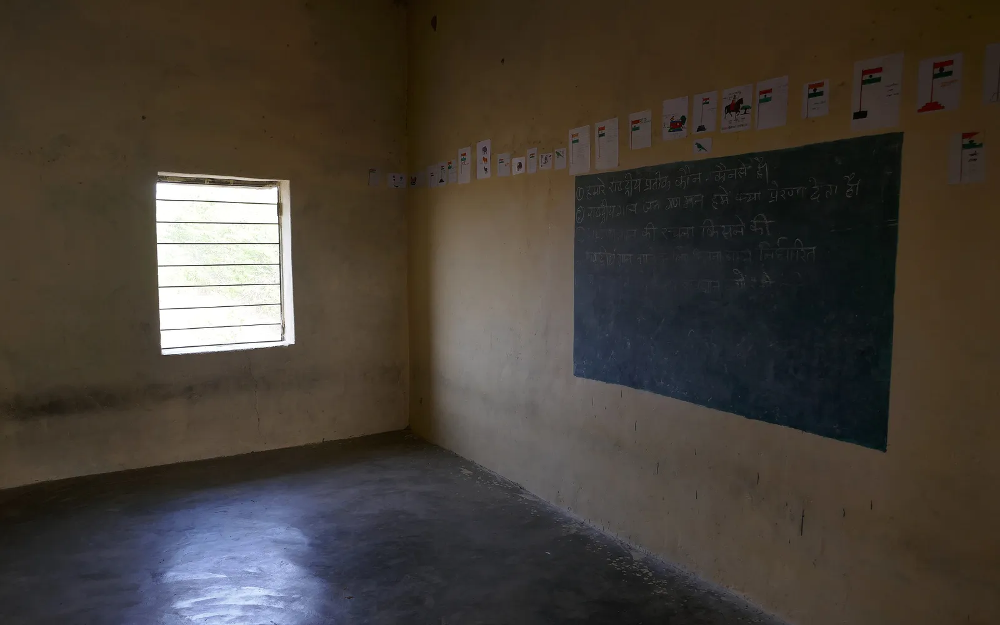
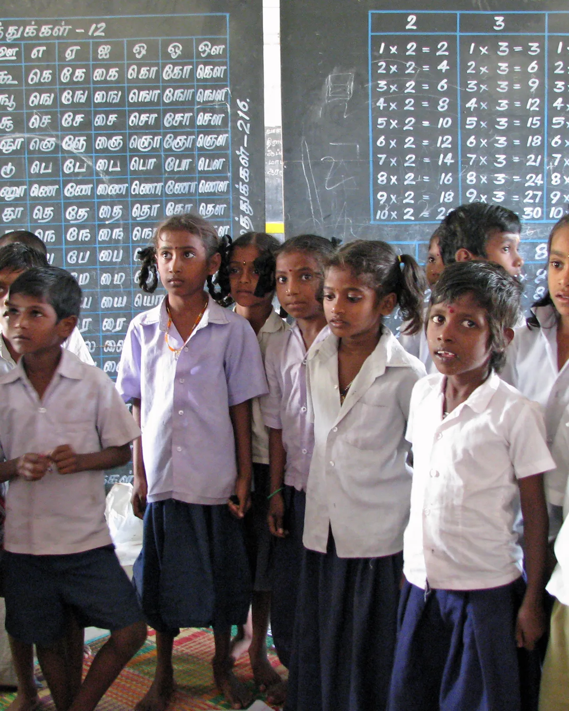

No student should fall behind because nobody noticed.
Most students in India learn without a tutor, a coach, or anyone at home who can explain the next step. We are building that help for them.

Find what each student missed, and help them build from there.
Not a shortcut to marks. A patient tutor that notices where understanding broke, goes back to that idea, and helps the student climb back up.
When they understand, they move forward with confidence.

How we will get there.
Start with the book they already have.
Gyanz starts with Class 10 Science. Every note and question is written from the NCERT textbook, and checked against it.
Talk the way they think.
Gyanz works in English or Hinglish, one small step at a time.
Be honest about where we are.
Gyanz is in pilot, built by four Class 10 students. Today it is an app for computers, and the tutor runs on an AI account the parent pays for. Reaching students without a computer, or without that money, is the part of our mission still ahead.